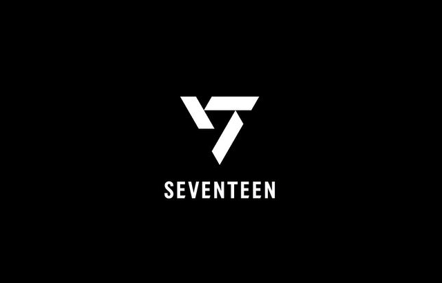
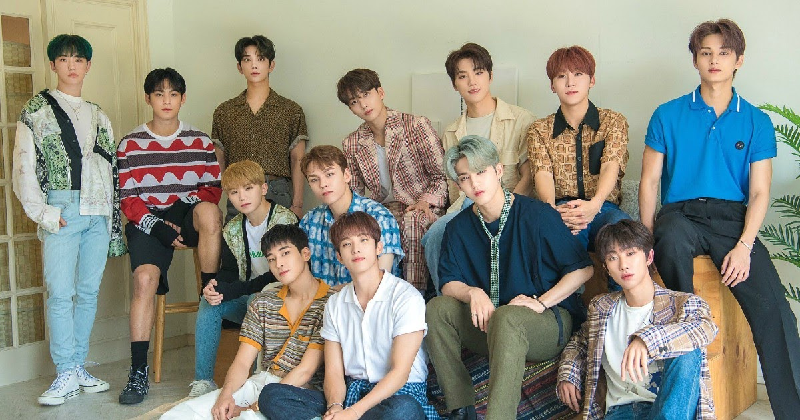

Welcome to Seventeen's World!
1. BACKGROUND
1.1 The Birthday Of SVT : 26 May, 2015
1.2 More About SVT!
SEVENTEEN is an idol group under PLEDIS entertainment company, with 13 members and 3 sub-units forming one team.The 3 different sub-units Hip-hop Team, Vocal Team and Performance Team in the group also actively participated in album production.
Members : S.Coups (Leader), JeongHan, Joshua, Jun, Hoshi, Wonwoo, Woozi, The 8, Mingyu, DK, SeungKwan, Vernon, Dino
2. Song Lists
2.1 Most Viewed Music Videos In Youtube
<1i>DON'T WANNA CRY(235.9 million)
<1i>CLAP(109.3 million)
<1i>VERY NICE(105.1 million)
2.2 Albums Sales Rank
<1i>ATTACCA 2021 (sales: 2,401,368)
<1i>YOUR CHOICE 2021 (sales: 1,772,848)
<1i>HENG:GARAE 2020 (sales: 1,454,279)
3. About Three Small Teams
3.1 Names of Three Teams
They are divided into three units namely: Vocal , Hip-hop and Performance Teams.
3.2 Three Outstanding Songs of Each Team
<1i>Vocal Team: Don't Listen In Secret, Habit, Pinwheel.
<1i>Hip-hop Team: Trauma, What's Good, Back It Up.
<1i>Performance Team: Lilily Yabbay, Wave, Moonwalker.
3.3 Members Of Each Team , Leaders will be highlighted
<1i>Vocal Team: JeongHan, Joshua, DK, SeungKwan, Woozi .
<1i>Hip-hop Team: Mingyu, Wonwoo, Vernon S.Coups .
<1i>Performance Team: Jun, The 8, Dino, Hoshi .
4. Links
4.1 Create a hyperlink
Visit SEVENTEEN
Visit SEVENTEEN in a new window
5. Media
5.1 Team Logo

5.2 Group Picture

5.3 YouTube Video
VIDEO
6. Table
Members' information
Name
Birthday
More Details
S.Coups
8 August,1995
link
Jeong Han
4 October,1995
link
Joshua
30 December,1995
link
Jun
10 June,1996
link
Hoshi
15 June,1996
link
Wonwoo
17 July,1996
link
Woozi
22 November,1996
link
The 8
7 November,1997
link
Mingyu
6 April,1997
link
DK
18 February,1997
link
SeungKwan
16 January,1998
link
Vernon
18 February,1998
link
Dino
11 February,1999
link